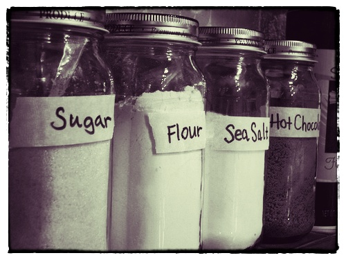

Il 23 febbraio sono stato a Roma alla prima conferenza organizzata dall’associazione OpenGeoData Italia. Ne sono stato – per conto di TANTO - uno dei relatori e sono contento di aver partecipato. Le ragioni sono diverse e ne voglio elencare solo alcune:
- ho avuto la possibilità di avere un quadro di quello che avviene sul tema in Italia;
- ho incontrato persone che troppo spesso incrocio soltanto virtualmente (napo, Massimo Zotti, GimmiGIS, Antonio Rotundo, Giovanni Biallo, …) ;
- ho stretto la mano a Ernesto Belisario, Martin Koppenhoefer e Gianluca Vannuccini;
- ho preso una pausa contro il “logorio della vita moderna”, fatta anche di chiacchiere e birra con il presidente.
Cosa voglio di più? In realtà avrei proprio voluto incontrare un lucano, ma questa è un’altra storia ed è un po’ “up, close and personal”.
La nostra relazione aveva come obiettivo quello di proporre (ed in un certo senso anche quello di verificarne l’esigenza) un’azione per la crescita della consapevolezza del valore degli OpenGeoData, che contribuisca a fare in modo che non rimangano soltanto un obbligo di legge, una moda e uno sfogo per (geo)geek. Non conoscevo i contenuti delle presentazioni degli altri relatori, ma ascoltandoli ho compreso chiaramente che si trattava di un’esigenza condivisa da molti e sono tornato a Palermo “forte” di diversi riscontri.
Ieri pomeriggio però mi ha preso un po’ lo sconforto. Volevo raccogliere degli elementi, per costruire un elenco commentato di casi tipo di “pregio”, da usare come strumento divulgativo classico. Ho consultato alcuni siti web di importanti comuni del Nord e del Sud Italia, concentrandomi sulla sezione geografica dei dataset disponibili e due elementi mi sono saltati agli occhi.
Il primo è un errore, anzi come diceva la mia professoressa di Matematica “un orrore”, ma per fortuna molto poco diffuso: layer cartografici in formato .shp non accompagnati da file .prj. Non può bastare – come avviene – scrivere nella pagina di descrizione dello specifico dataset “Sistema di riferimento UTM ED50”. Fatto il download del dato (che contiene i soli .shp, .shx e .dbf) il virus ha iniziato già a diffondersi: io infatti magari passerò il file .zip ad un mio collega senza precisargli il sistema di coordinate letto nella pagina, ed in due passaggi ho compromesso in modo grave la qualità del dato.
Il secondo purtroppo è qualcosa di molto diffuso e ha radici che non riguardano gli OpenGeoData, ma che in questo contesto fanno tanto “male”. Ho aperto diversi dataset spaziali scaricabili in formato .shp, ne ho fatto il download e ho visualizzato in un client le tabelle associate. Mi sono trovato davanti nomi di campo di questo tipo: “AFFIDARE_A”, “TIPO_MANU1”, “ARRE_GESTI” e anche il meraviglioso “GIANCARLO”. Il formato .dbf – con tutti i suoi limiti – ci mette il suo, ma pubblicare un dato, senza accompagnarlo con un file che ne descriva nel dettaglio il contenuto informativo, mi pare un “non senso” e mi fa pensare ad un paio di indimenticabili caffè bevuti in case in cui i barattoli di sale e zucchero non avevano etichette.
Il primo elemento è per fortuna poco diffuso e di soluzione banale, perché esistendo già uno standard per descrivere il sistema di coordinate di un file .shp, si possono implementare delle semplici procedure di controllo.
Il secondo è molto più complicato perché da anni tutti noi produciamo file .shp, ma senza porci il problema di descriverne il contenuto informativo e stavolta in un solo passaggio impoveriamo il valore del nostro dataset.
Andare verso le 5 stelle dei Linked Open Data e verso INSPIRE in qualche modo risolverebbe problemi di questo tipo, ma ad oggi la gran parte degli OpenGeoData vengono pubblicati principalmente in modalità più “semplici” e penso sia necessario trovare una “cura” prima possibile.
Che ne pensate?
Oggi fra l’altro è un giorno speciale, perché scatta l’open by default: ”dati e documenti pubblicati online dalle amministrazioni titolari – senza una esplicita licenza d’uso che ne definisca le possibilità e i limiti di riutilizzo – sono da intendersi come dati aperti, quindi dati che possono essere liberamente acquisiti da chiunque e riutilizzabili anche per fini commerciali.”
Foto di jlib
I contenuti potrebbero non essere più adeguati ai tempi!

By GimmiGIS on mar 19, 2013
Caro Andrea,
Innanzitutto il piacere di incontrarti di persona è stato reciproco, e mi dispiace non ci sia stato il tempo per bere una Geobirra insieme
Per quanto riguarda le tue considerazioni sui primi OpenGeoData disponibili, hai perfettamente ragione.
Sai quante volte ho dovuto usare come base i dati Istat, che hanno sistema di coordinate noto, per poi andare per tentativi nell’assegnare il sistema di coordinate ai dati Shp “anonimi”, finché assegnando quello giusto non li vedevo finalmente comparire in una posizione plausibile…
Purtroppo, quando presento le potenzialità dei software GIS e pronuncio la parola “sistema di coordinate” o peggio ancora “georeferenziazione” vedo molti occhi sbarrarsi nella tipica espressione di chi pensa che non sta capendo nulla ma non osa dirlo.
Ahimé, che dire?
Da una parte occorre una grande opera di alfabetizzazione.
Dall’altra una altrettanto seria definizione dei metadati necessari, anczi indispensabili.
Senza però cadere nel caso opposto, dove secondo gli standard ISO viene richiesto anche il colore dei calzini di chi ha prodotto il dato…
Un po’ di pragmatismo non farebbe male.
Grazie, a presto!
GimmiGIS
By Dimitri Dello Buono on mar 19, 2013
Ho smesso di ascoltare e di vedere quello che fanno (o meglio che non fanno) molte pubbliche amministrazioni che invece spendono tanto sotto la pressione di aziende che nulla hanno a che vedere con Open Data e se vogliamo con la parolina Open.
Il bello che qualche persona a cui hai stretto la mano tutto questo fa tanto piacere.
Andiamo verso il fare e non verso il dire e saremo sulla strada buona.
Buon viaggio Andrea credo che faremo un bel po di strada insieme.
By Giovanni Allegri on mar 19, 2013
Mi fa molto piacere vedere i primi commenti al post di Andrea. Soprattutto sono felice di vederli in linea con quanto ci diciamo da tempo, ovvero arrivare ad un piano di concretezza sul quale poter sperimentare e misurare il valore dell’Open(Geo)Data.
Come condiviso recentemente con Andrea, ritengo che la questione ultima sia far sì che tutto questo “movimento” non produca valore soltanto per chi implementa specifiche e geoportali, o per dare lustro alle PA. Tutto ciò deve arrivare ad offrire dati (e relative informazioni) di qualità e di vera utilità (benissimo lo strato delle campane del vetro, ma preferirei il grafo stradale completo, i civici, ecc.) a professionisti, ricercatori, associazioni, aziende, in grado di cavarne un valore aggiunto, di farne un uso significativo (non basta l’esempio simpatico da guardare tra un tweet e l’altro!) che dia ragione delle tante strutture e contenitori che stiamo creando.
Per questo credo serva promuovere un piano parallelo , in diretta connessione con quello di chi elabora gli strumenti abilitanti, su cui affrontare la reale efficacia e utilità dei dati liberi e delle relative infrastrutture.
Questo mi auguro di vedere nei prossimi tempi, e magari di poterlo promuovere insieme a tutti voi.
By Dimitri Dello Buono on mar 19, 2013
Il dato Open è importante ma è altrettanto importante avere strumenti Open.
Molto anzi troppo spesso si va a caccia del dato open per aumentare il copia e incolla e i Tb si duplicano a dismisura senza senso e perdendo di vista quello che è la fonte e la qualità dell’informazione.
Poi si passa ai file con il nome ultima versione, ultimissima, ultimissimissima, ultimissimissimisssima di oggi. Mettiamo i servizi on line, garantiamo l’efficienza di quel po che facciamo noi e non di quello che non sappiamo più neppure da dove sia nato.
Ognuno deve condividere quello che di suo ha e poter usare quello degli altri senza dover avere il dubbio e la paura che domani non ci sia più in rete e quindi copiarselo.
Pensiamo all’Open 2.0 e non al vecchio modello che ormai è superato prima ancora di partire.
By Maurizio Foderà on mar 19, 2013
Ciao Andrea . Quindi stai su!
. Quindi stai su!
pensare a te come una persona presa dallo sconforto mi risulta un pò difficile…capisco, comunque, che ogni tanto può capitare trovando un campo “GIANCARLO”, ma pensa se trovavi un campo “CARMELO”
Io tradurrei la “grande opera di alfabetizzazione” di GimmiGIS nella parola FORMAZIONE! D’altro canto mi sembra che tu sia stato l’unico durante il Webinar: “OpenGeoData Italia: risultati e prospettive emersi dalla prima conferenza” organizzato da Planetek lo scorso 12 Marzo ad usare questa “parolina”. Parallelamente alla “Liberalizzazione dei dati” si deve, secondo me, attivare una azione “Formativa” e non solo “Informativa” che concorra a creare un linguaggio comune e che permetta di diffondere un geodato sempre più di qualità!
By Giovanni Biallo on mar 19, 2013
Come avrai visto, in conferenza ho mostrato un caso simile al tuo: un dataset pubblicato con le indicazioni di un sistema di coordinate errato, senza alcuna descrizione dei campi (che erano più di 20 e con nomi in molti casi indecifrabili), formato contenuto nello zip non dichiarato. Ne ho una caterva di questi casi anche di portali opendata più blasonati.
Purtroppo i portali opendata sono gestiti da persone che poco sanno di dati geografici. Infatti i metadati dichiarati sono insufficienti. Io ho proposto di inglobale nel file compresso, oltre i file di contenuto anche un file testo del metadati completo, secondo le normative in uso per i dati geografici. Ovviamente, almeno il sistema di coordinate, dovrebbe essere contenuto nel file shape. Come Associazione OpenGeoData Italia stiamo comunicando queste idee agli enti. Per altre cose hanno già risposto positivamente. Quindi non dispero.
By Stefano Iacovella on mar 19, 2013
Purtroppo la qualità dei dati in molti uffici della pubblica amministrazione lascia molto a desiderare. Fino a qualche tempo fa questi dati erano “chiusi”, e solo chi per motivi professionali li doveva utilizzare si rendeva conto delle lacune. Il fiorire di liberazione di dati da parte di molte pubbliche amministrazioni come open data non ha magicamente eliminato i difetti.
Concordo con i post precedenti che è soprattutto un problema culturale, spesso anche tra “tecnici” c’è una grande ignoranza e pressappochismo sui metadati. Anche fermandosi alle informazioni essenziali, senza doversi perdere nei meandri dell’ISO.
Sono però convinto che il processo di liberazione, anche se di dati di dubbia qualità, sia un bene. Spero anzi, come si accennava in conferenza a Roma che sempre più dal dato aperto si passi al dato partecipato, dove la PA è uno degli attori del processo di produzione e aggiornamento del dato e non necessariamente il più importante.
By Antonio Rotundo on mar 20, 2013
Caro Andrea,
anche per me è stato un vero piacere incontrarti.
L’entusiasmo che dichiari essere calante più che uno stato d’animo io voglio interpretarlo come uno “stratagemma comunicativo” per offrire un ulteriore stimolo ad una discussione che, anche alla luce delle importanti novità legislative, è sempre più attuale e sempre più aperta e, quindi, tenere giustamente alta l’attenzione sul tema.
Anche perché quelli posti sono problemi noti, come sottolineava anche Biallo, per chi lavora con dati territoriali in molti casi prodotti dalle PA. Ora in più c’è l’”aggravante” che sono (o dovrebbero essere) anche dati open per cui la pretesa di una qualità del dato (che dovrebbe esserci comunque) diventa ancora più pressante.
Credo che, in attesa che ci possa essere l’armonizzazione dei dati secondo i modelli comuni di INSPIRE, la soluzione per l’attuale, già accennata da GimmiGIS e condivisa in altri interventi, stia davvero nei metadati e nella consapevolezza che senza una corretta descrizione e documentazione del dato si crea ulteriore disvalore nell’utilizzo del dato stesso. Per dare una misura dell’importanza dei metadati io riporto spesso quanto indicato nel preambolo della Direttiva INSPIRE (“Il tempo e le risorse dedicati a ricercare i dati territoriali esistenti o a decidere se possano essere utilizzati per una finalità particolare rappresentano un ostacolo decisivo allo sfruttamento ottimale dei dati disponibili”) o quanto affermato nell’UK Location Strategy (“Gli utenti dell’informazione geografica spendono l’80% del loro tempo a cercare, raccogliere e gestire i dati e solo il 20% ad analizzarli per risolvere i problemi e generare benefici”), come l’esempio degli attributi dello shp dimostra.
In Italia c’è stata già una seria definizione dei metadati (per riprendere le parole di GimmiGIS) con il profilo del RNDT; i metadati individuati consentono, infatti, tra l’altro (oltre a indicare sistema di riferimento, risoluzione spaziale, …), di:
- poter indicare la licenza d’uso del dato (anche con l’indicazione dell’URL della licenza medesima);
- poter indicare il riferimento (tramite, per es, un URL) di qualsiasi documento che possa fornire ulteriori informazioni di descrizione del dato; nel nostro caso può essere un file che descriva il contenuto informativo (gli attributi dello shp).
Per cui sarebbe sufficiente che il dato fosse accompagnato dai suoi metadati, una sorta di “carta di circolazione” senza la quale il dato stesso non possa essere reso disponibile e open, in particolare.
D’altronde, il principio presente nel Decreto relativo al RNDT (“La pubblicazione dei metadati nel Repertorio certifica l’esistenza del relativo dato”) afferma, in sostanza, proprio questo: il dato esiste se documentato attraverso i metadati. Configurando, così, il RNDT come il “PRA” dei dati territoriali, per riprendere l’analogia con i veicoli. Se si attuassero compiutamente queste previsioni normative, quindi, un generico utente non dovrebbe nemmeno consultare tutti i siti dei vari Enti Pubblici (come fatto da te) per cercare gli opengeodata della PA; sarebbe sufficiente consultare il RNDT per:
- avere la descrizione completa del dato;
- verificare l’idoneità del dato ai propri scopi e le condizioni di accesso e di utilizzo;
- accedere, quindi, direttamente dai metadati, ai servizi di download dei dati.
Tra il dire e il fare, però …. bisogna accrescere la consapevolezza sia nella PA che tra gli utenti. Anche se lentamente, è un processo che prende sempre più piede e noi tutti lavoriamo ogni giorno per questo.
Per i dati e gli opengeodata che verranno, cioè per i dati di nuova acquisizione, poi, sarebbe una buona prassi che già in fase di gara le PA richiedessero anche i metadati strutturati come innanzi detto.
Perché l’entusiasmo sia sempre crescente, infine, per poter raggiungere quanto auspicato, è necessario, sì, l’impegno della PA ad adempiere a quanto le norme richiedono, visto che finalmente ci sono, ma che, come affermava anche Stefano, sia utile anche l’azione di tutta la comunità di utenti che “tenga il fiato sul collo” della PA stessa con un ruolo di stimolo, di controllo e di parte attiva nel processo di apertura.
Credo che la annunciata definizione delle linee guida nazionali possa essere una prima occasione.
By Massimo on mar 20, 2013
“In quella Macondo dimenticata perfino dagli uccelli, dove la polvere e il caldo si erano fatti cosí tenaci che si faceva fatica a respirare, reclusi dalla solitudine e dall’amore e dalla solitudine dell’amore in una casa dove era quasi impossibile dormire per il baccano delle formiche rosse, Aureliano e Amaranta Ursula erano gli unici esseri felici, e i più felici sulla terra.”
(Gabriel García Márquez, “Cent’anni di solitudine”)
Qual sgomento coglie il geometra dell’ufficio tecnico quando deve uscire dal suo piccolo mondo perfetto e confrontarsi con il modello dati del comune vicino! E non lo dico con ironia. E’ un fatto normale.. e si risolverà. Ci vorrà del tempo, buona volontà, e qualche spintarella come questa, che il movimento open data sta dando.
Parliamo da anni di standardizzazione ed interoperabilità dei dati geografici, ed INSPIRE ci ha provato a fare ordine con un approccio top-down che ancora fa fatica.
La domanda di dati da parte dell’utenza e dei cittadini, al contrario, crea una domanda micidiale per la standardizzazione, dal basso. Infatti siamo qui a parlarne, finalmente. E’ quel fiato sul collo di cui parla Antonio Rotundo.
Il bello è che partiamo da una situazione in cui tante cose sono già definite: “come” devono essere gli Open Geo Data ed il loro metadati ce lo dice la Direttiva INSPIRE e tutte le leggi nazionali che si porta dietro.
Si tratta di farlo sapere a tutti.
Con Giovanni Biallo dicevamo che uno dei motivi per cui probabilmente la conferenza del 28 febbraio ha avuto tanto successo era quell’inciso, “Istruzioni per l’uso”.
Vogliamo iniziare a darle, queste istruzioni?
Costituiamo quel gruppo di lavoro che diceva Andy Borruso, e facciamo dei mini-corsi dal titolo: COME SI FANNO GLI OPEN GEO DATA.
Lezione n.1: lo shape file
(sottotitolo: l’importanza di non chiamarsi giancarlo)
Durata: 15 minuti.
Eccetera.
Non inventiamoci cose nuove: lanciamo queste operazioni nell’ambito delle iniziative che sono già in corso: l’Associazione OpenGeoData, i tavoli di lavoro di AGID, ecc.
Io metto a disposizione tempo, competenze e strumenti della mia azienda. E l’entusiasmo che è tutto mio.
Lo faccio gratis, e voglio che questi mini-corsi siano gratuiti, perché se cresce la competenza nel mercato aumentano le possibilità che vengano apprezzate le mie, di competenze, e crescono le opportunità per tutti.
Chi vuole contribuire?
By pierluigi santin on mar 20, 2013
@Massimo…
PRESENTE!
By Maurizio Foderà on mar 20, 2013
Bravo @Massimo…
proprio di questo parlavo quando parlavo di FORMAZIONE!
Io ci sono!
By Antonio Rotundo on mar 20, 2013
Disponibile!
By Andrea Borruso on mar 20, 2013
Buongiorno,
era da molto tempo non vedevo uno scambio così ricco e che richiede di passare dal pensiero all’azione.
Mi prenderei però ancora qualche giorno, per raccogliere eventuali altri spunti.
L’entusiasmo non è più calaten
Buona giornata e grazie
By stefano parodi on mar 20, 2013
Su G+ Andrea mi chiedeva, relativamente alla mia esperienza sulla pubblicazione dei dati territoriali per Regione Liguria,
se avevo avuto dei ritorni da parte degli utenti sull’utilizzo dei dati scaricati.
Beh, i ritorni sono stati nulli.
Forse anche perchè l’amministrazione non ha mai messo in piedi nessun meccanismo di interazione, un meccanismo che permetta di chiedere “Caro utente, se hai fatto qualcosa di interessante con i dati, perchè non ce lo dici?”.
E questa effettivamente è una cosa interessante per tutti, amministrazioni e utenti.
A mio avviso sarebbe però più interessante qualcosa possa raccogliere le esperienze a livello nazionale, una sorta di catalogo delle cose fatte mediante l’utilizzo degli OpenGeoData
delle amministrazioni italiane.
Oggi mi sono accorto che una cosa del genere esiste gia!
Il progetto RiPUBBLICA del sito opengeodata
http://www.opengeodata.it/index.php?option=com_content&view=section&layout=blog&id=10&Itemid=97
permette proprio questo. Ed è una iniziativa che andrebbe in qualche modo pubblicizzata e magari, dico io, estesa ad altri utilizzi (perchè solo applicazioni?, perchè non
anche altri tipi di utilizzo:, studi o ricerche, produzione di dataset derivati, ecc…?).
Una nota finale: anche io a volte mi faccio prendere dallo sconforto. Attraverso twitter, blog, ecc… entro
in contatto con realtà che sono molto più avanti rispetto a quella italiana.
Da una parte vedo quello che potenzialmente si potrebbe fare e dall’altra mi scontro con i limiti della realtà in cui lavoro, ed è decisamente frustrante.
La strada da percorrere è lunga ma adesso disponiamo di strumenti (non solo tecnologici, ma anche comunicativi) che anni fa ci sognavamo. Utilizziamoli al meglio!
@Massimo, mi piace molto la tua proposta e sono disponibile a collaborare.
By Giovanni Allegri on mar 20, 2013
@Stefano, proprio dell’idea di un “questionario” per raccogliere utilizzi significativi di dati liberi, era ciò di cui discutiamo da giorni con Andrea e gli altri di TANTO.
Credo sarebbe un’iniziativa importante, se ben fatta. Rendere ragione (se c’è!) del valore aggiunto che si può creare sulla base del dato libero, secondo me potrebbe essere di sprone anche a fornire dati di maggiore qualità e ad avere una considerazione maggiore del valore del dato libero (che non serva solo a mettere su geoportali e a far belle le PA).
Come dicevo ad Andrea, io son un po’ come S. Tommaso: credo nel valore dell’accesso al dato libero, ma ho bisogno di vedere se qualcuno veramente ne fa qualcosa di realmente utile e significativo… sennò vanno bene anche i campi “Giancarlo”
@Massimo, finalmente usciamo allo scoperto in maniera decisa: serve un approccio bottom-up, pragmatico, sulla scorta di tutti gli strumenti che disponiamo. La questione è sollecitare il target. Sinceramente non credo però che sia efficace pensare in termini di “masse”. In questo momento vorrei chiamare in causa chi, da questi dati (o dai dati che vorrebbe liberi ma che ancora non ci sono), sia in grado di mostrare utilizzi la cui efficacia sia evidente e comprensibile anzitutto a chi è responsabile della liberazione dei dati. Non so se mi spiego. Vorrei che riuscissimo a far emergere il merito e le intelligenze (ricercatori, professionisti, aziende, o magari anche comuni cittadini), che dimostrino che effettivamente un valore aggiunto si può cavare da questa roba. Chiedo perdono, e con tutto il rispetto per chi lo fa, ma non penso si possa motivare l’open(geo)data con un’app per trovare la campana di vetro più vicina! O almeno, non basta…
Quindi, ok, un approcci obottom-up, ok , la formazione, ma direi anche una strategia per rendere ragione e merito dello sforzo comune che stiamo compiendo.
By Giovanni Biallo on mar 20, 2013
Quindi andando al sodo: metadati come carta di identità del dataset e collegata a questo; formazione come programma di spot brevi su argomenti verticali che però insieme creano un programma (io farei dei video pubblicati su youtube); tracciamento del riuso e feedback con gli enti open.
L’Associazione essendo già attiva su tutti questi temi, appoggia qualsiasi iniziativa interessante. Abbiamo lanciato più di un anno fa l’iniziativa “la RiPUBBLICA ITALIANA” ed ora faticosamente cerca di dargli consistenza.
Per il feedback dobbiamo tutti usare di più i commenti ai dataset pubblicati (su alcuni siti questo è possibile). Vi assicuro che funziona.
In alcuni casi siamo stati avvisati di alcuni commenti a cui non era stata data risposta e, dopo una nostra mail formale (la mandiamo prima normale e poi via PEC) le risposte arrivano. Quindi se scoprite qualcosa che non va, segnalatelo, perchè qualcosa si muove.
By stefano parodi on mar 20, 2013
@Massimo. D’accordo su tutta la linea, anche io credo nel valore degli open data, ma finora è stata una sorta di fede. Mi piacerebbe vedere esempi significativi di utilizzo, questo vale anche e forse ancora di più, nel caso dei Linked Data e del Sematic Web in genere, dove ho visto veramente poche applicazioni significative.
By Stefano Iacovella on mar 20, 2013
Come dicevo ad Andrea, in risposta alla sua email riassuntiva, trovo un ottima cosa il dibattito che si sta creando e la voglia di riassumere tutto in uno sforzo collaborativo su wiki, a cui spero di poter dare anche il mio piccolo ed umile contributo.
Voglio però sottolineare come, tra i mille problemi sui dati che esistono e che sperimentiamo quotidianamente, io sono ottimista e vedo il bicchiere in via di riempimento
I metadati sono da migliorare, i formati dovrebbero essere più aperti e se guardiamo ad esperienze estere ci sentiamo indietro. Però dopo venti anni passati nel settore non posso non riconoscere una grande apertura che solo 5 anni fa era tutta da venire.
Oggi è tutto un fiorire di Amministrazioni che pubblicano dati e finalmente il RNDT non è un pensiero stupendo ma una bella realtà. Tutto può e deve essere migliorato ma intanto si parte. a voler cercare la perfezione si rischia di non fare mai nulla.
E quando ancora oggi mi trovo davanti a funzionari che cercano di tenere chiusi i dati in possesso dei loro uffici, magari per difendere un meschino centro di potere personale, non posso che pensare con ammirazione ed empatia a chi pubblica i dati, anche se con il campo “GIANCARLO”
Complimenti a tutti e grazie per gli spunti interessanti.
By Pietro Blu Giandonato on mar 21, 2013
Un saluto a tutti, chi conosco e chi no. Questo pezzo di Andy è diventato proprio una bella piazza, come piace dire delle nostre stesse discussioni tra noi TANTI.
Probabimente il pessimismo – forse meglio dire scetticismo – che serpeggia tra molti di noi geomatici riguardo questa “moda” degli open data deriva proprio dal fatto che – come si dice qui a Bari – ne abbiamo fritti di polpi. Fronteggiamo infatti il problema della scarsa disponibilità di dati liberi sin da quando, circa 25 anni fa, i GIS hanno cominciato ad essere utilizzati anche in Italia. Come ho raccontato in un mio breve intervento in occasione dell’Open Data Day di Bari del 23 febbraio scorso, i miei primi approcci con la geomatica hanno fatto i conti con la mancanza totale di dati in formato digitale, alla quale si sopperiva con la georeferenziazione e digitalizzazione di tavolette IGM 1:25k, e la scansione e ortorettifica di foto aeree. E chissà quante potreste raccontarne anche voi.
Insomma, la nostra fame di dati è atavica, e sentire tutta questa gente che parla – spesso a sproposito – di dati aperti e liberi e vedere molte PA che fanno a gara ad aprire portali sugli open data, spesso con pochissimi dataset, magari privi del metadato minimo sindacale, beh tutto questo ci fa irritare non poco. Anche Enzo Barbieri ha ribadito un certo scetticismo a riguardo, sul blog di Planetek.
Ma vorrei benevolmente in parte smentire proprio lui, qui su TANTO, contribuendo con una iniezione di fiducia e ottimismo. Assieme ad altri amici, abbiamo organizzato l’evento nell’ambito del International Open Data Day a Bari. Eravamo persone di estrazione estremamente varia, oltre me, un’avvocato, uno statistico, una giornalista e alcuni sviluppatori. A nostro avviso l’evento è molto ben riuscito, con circa 130 registrati, un programma di lavoro che ha visto una tavola rotonda mattutina nella quale esponenti della PA, imprenditori della ITC, hacker, ricercatori, semplici cittadini curiosi, hanno discusso anche piuttosto criticamente, attraverso le proprie esperienze, su quelli che sono i problemi che caratterizzano gli open data, ma anche le tante opportunità che possono suscitare. Qui trovate le registrazioni dello streaming video.
Quello che voglio dire è che non siamo solo noi geomatici ad avere un certo grado di disillusione riguardo ciò che sta realmente accadendo attorno alle informazioni e ai dati liberi, ma si tratta di un sentimento piuttosto trasversale. Eppure sono proprio gli eventi come l’ODDay e la conferenza OpenGeoData che possono contribuire a rendere questa disillusione una spinta a chiedere a fare di più, e meglio, a chi i dati li detiene e ne è responsabile. Ma d’altro canto nemmeno noi stessi possiamo sottrarci a queste necessità, perché siamo professionisti che spesso rielaborano e generano dati nuovi, che a loro volta magari andranno a finire proprio in una IDT pubblica.
Nel pomeriggio del 23 febbraio, a Bari, abbiamo cercato di dare vita a tre sessioni hackaton-style di webscraping, data refinement e data visualization. Hanno partecipato non solo – come ci si attende in eventi del genere – sviluppatori, ma soprattutto professionisti, funzionari, cittadini, che hanno saputo arricchire le sessioni con il proprio peculiare punto di vista, le proprie esigenze, il proprio modo di lavorare. Io ho animato quella sulla data visualization, durante la quale abbiamo fatto una sorta di confronto tra il portale degli open data del Comune di Bari – riusandone alcuni dataset – e quello della Regione Puglia, quest’ultimo lanciato proprio il 23 febbraio scorso, e che a mio avviso è una di quelle azioni stile “piantiamo la bandierina”. Ma c’è tempo per crescere.
Riguardo la raccolta dei desiderata sulla disponibilità di dati aperti e liberi, il coordinamento nazionale dell’ODDay ha diffuso un questionario con il quale si è voluta promuovere un’indagine sull’uso degli open data prima degli eventi ODDay del 23 febbraio. La gente ha potuto segnalare quali dataset secondo loro è fondamentale rendere aperti e liberi. Si tratta di una iniziativa che fa il paio con quella della quale parlava Giovanni Allegri, che dovrebbe essere più tagliata sui dati geografici, ma che credo valga comunque in generale per tutti i dataset. I materiali prodotti dagli eventi italiani dell’ODDay e i risultati dei questionari potete trovarli qui.
Tra i TANTI stiamo dunque pensando di lanciare una sorta di call per i desiderata riguardanti gli open geodata, che andrà ad affiancarsi al wiki o sito che Andy Borruso aveva proposto per sistematizzare le proposte e le idee di tutti noi e farle diventare una sorta di manifesto per promuovere i dati geografici aperti e liberi.
E’ evidente che l’onda è ancora alta… ce n’est qu’un début!
By GimmiGIS on mar 23, 2013
Un contributo a questa bella discussione nell’articolo che ho pubblicato sul Blog:
http://www.gisinfrastrutture.it/2013/03/prosegue-il-dibattito-opengeodata/
Un caro saluto a tutti
GimmiGIS
By napo on mar 26, 2013
Visto il ritardo con cui arrivo faccio un intervento semplice semplice.
Concordo con il punto di vista, ma penso anche che qui sia fondamentale costruire invece che demolire.
Uno degli ostacoli dell’open government data è dato proprio dalla paura di fare brutte figure.
Questa immagine
http://de.straba.us/wp-content/uploads/2012/08/barrieres_for_implementation_of_ogd.png
che ho presentato anche alla conferenza dove ci siamo visti, è più che esaustiva.
Davanti a queste situazione è fondamentale creare un dialogo di reciproco aiuto.
Bisogna creare comunità sui dati, cooperazione.
Il modello a 5 stelle di Tim Daves (che non è Bernes-Lee) vede la sua “apoteosi” con questa situazione
Collaborare su dati come una risorsa comune
Sono stati programmati cicli feedback in modo da ottenere miglioramenti ai dati rilasciati?
Si è creato un dialogo con la comunità per creare nuove risorse (ad esempio dataset derivati)?
Ed è su questo aspetto che, chi urla che vuole i dati, deve lavorare: i dati come risorsa comune.
Certo, ci deve essera anche chi ascolta, ma chi si lamenta deve farlo nel modo migliore al fine di evitare l’effetto “fetta di salame”: dove non si fa altro che levare un pezzo alla volta fino a che … il salame è finito.
I geodati – come ho detto nel mio intervento – hanno la virtù di avere una grande letteratura ed un pubblico che unisce sia esperti che utenti della strada digitale, quindi, invece che lamentarsi, cerchiamo di ragionare su come aiutare.
E mi sembra che in questo thread qualcosa in merito è apparso.
By marco bettini on apr 6, 2013
Scusate, a mio avviso, ci sono troppi sistemi gis in giro per i baracconi pubblici italiani. Poi cosa servono tutti sti gis, questi opendata? il 90% dei sistemi creati sono inutili e rappresentano degli ammortizzatori sociali, un modo per distribuire soldi. Geodati liberi? a far cosa? a cosa servono? chi li usa?
non vedo un modello di business, qualcuno puo’ illuminarmi in merito?
grazie
Marco